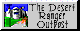

Gateway Library
Welcome to our gateway to the grid! As you may know, Jax Yllandian and Taran Cyberpunk 6993 have been riding the data buses around the grid--what we users call the Internet--for quite some time now, and they have collected some Wasteland links no doubt set up by other grid floaters. Here are some gateways to other Wasteland pages that have set up shop just around the sector.

The Library of Gateways:
- The Desert Ranger Outpost  by Tim Gray.
- GameOverOnlineMagazine has a nice review of Wasteland.
- Games That Weren't (Commodore 64 Vaporware website) has a nice set of pages on Meantime.
- Meantime Fan Page by 8-bit Weapon.
- Multiplayer Wasteland development page by Radioactive Rodent.
- Post Apocalyptic Media, by Thomas Morton.
- Ranger Center, by Chris Baer, is now located in a slightly updated archive here at the HQ-Grid. His site was active from January 29, 1996 through November, 2003, and he asked me to host the pages for antiquity's sake. Enjoy the trip down memory lane!
- Survivors of the Wasteland by Dark Star.
- The Wasteland WebRing.
- Walkthroughs, home of The Pretty Good Wasteland Guide, The Nearly Ultimate Fallout Guide and the Nearly Ultimate Fallout 2 Guide. By Per Jorner.
- Joseph Anthony's WastelandRanger.org website has a Wasteland look/feel to it, and also has a lot of Wasteland / Fallout content.
- Wasteland Refuge by K. Sipesh.
- Sobriquet's Return to 'Wasteland' play-by-post RPG game achive of game hosted at Rondaks Portal.
- Yahoo!'s Wasteland directory.
Collected home pages of the Wasteland Creators:
- Liz Danforth (Maps) has an online home at Daydream Graphics. Also, Liz's personal webpage: Oakheart.com.
- Burger Becky Heineman (Special Thanks) isn't selling hamburgers but does explain the nickname.
- Michael A. Stackpole (Design, Maps), author and game designer, blogger.
- Ken St. Andre (Design, Maps), author, role-playing guru and game designer.
- Charles Weidmann III (IBM Conversion Artist), artist, blogger.

This webpage complies with the W3C XHTML standards.